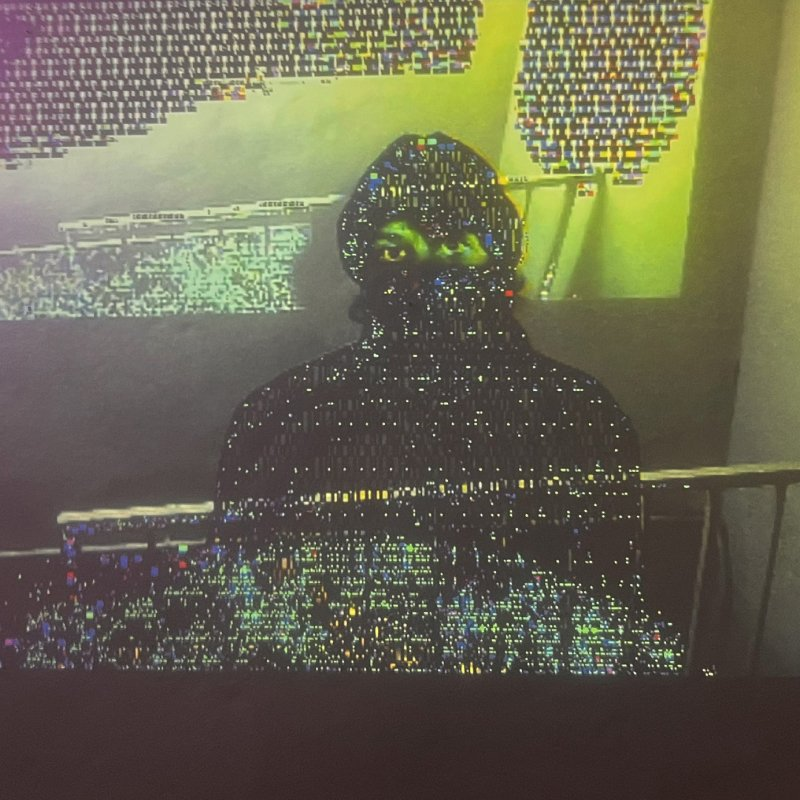
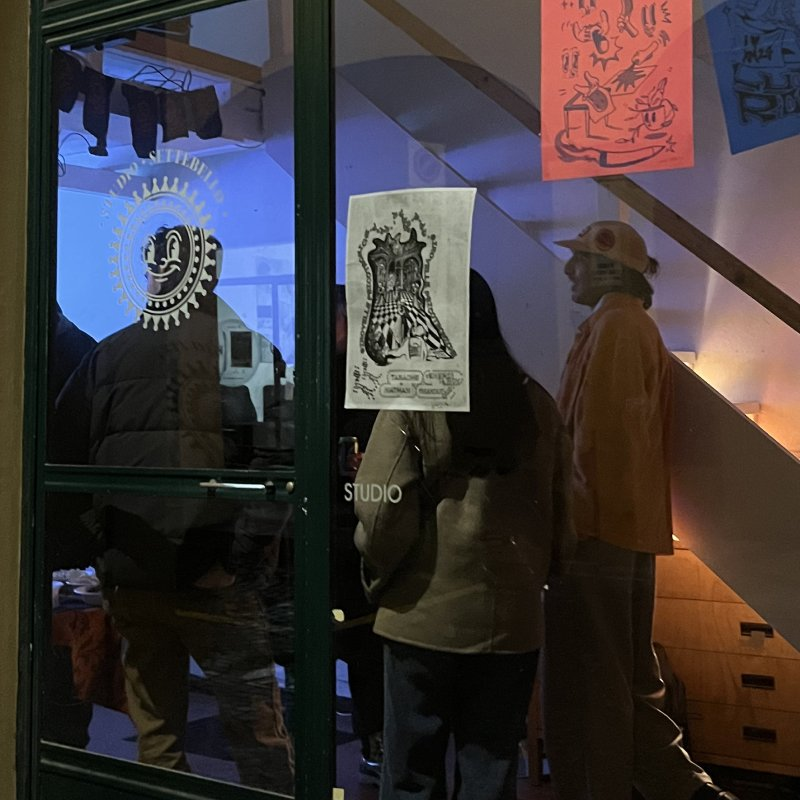
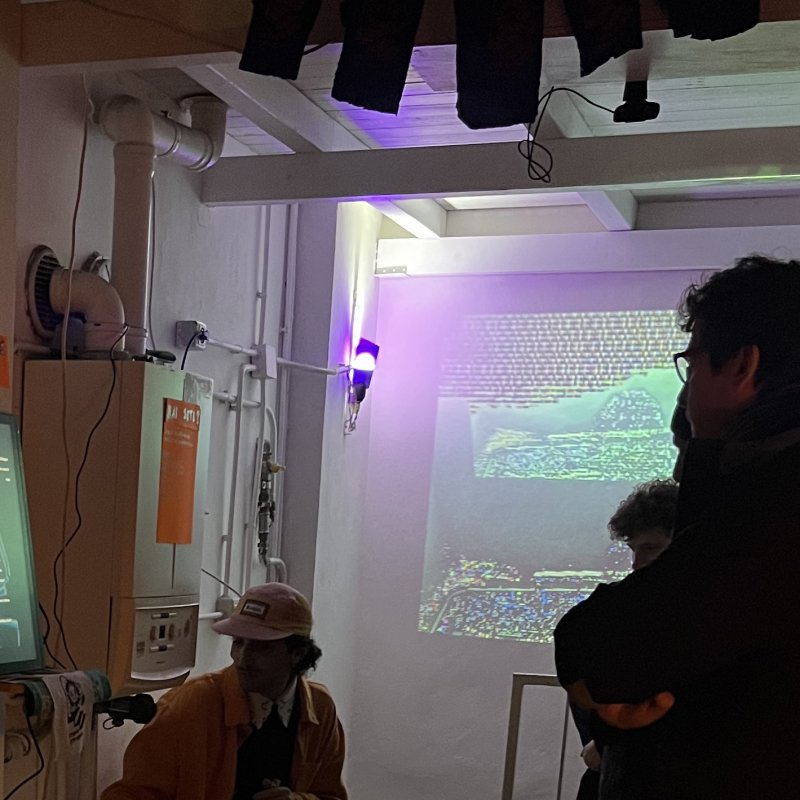
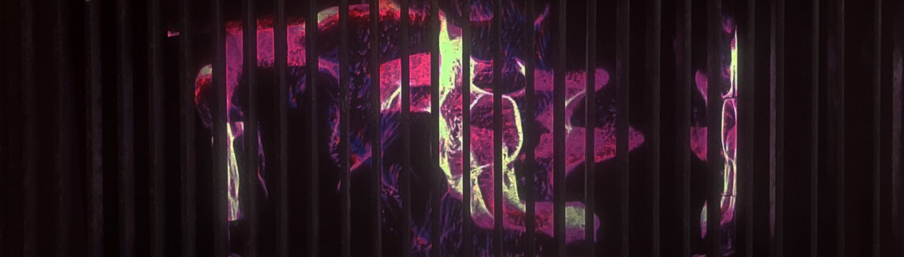
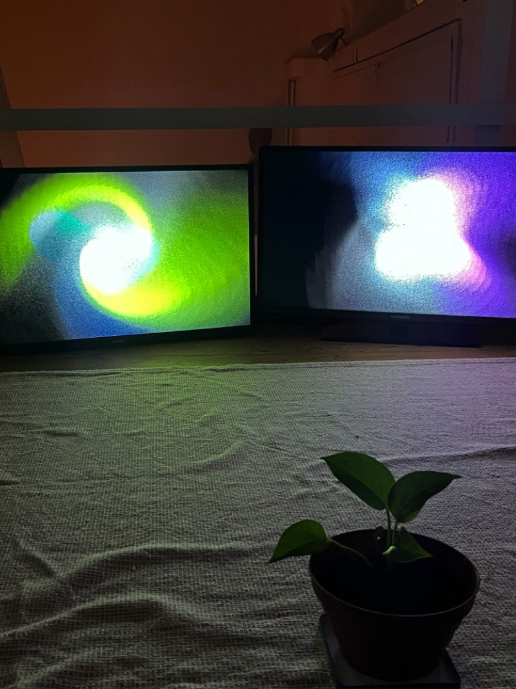

Disallineamenti Percettivi
Installazione sulla percezione di immagini, spazio e movimento

Dal vedere all'essere presenti.
C'è una sensazione che ritorna: quella di non riuscire più a stare dentro al proprio tempo. Le immagini arrivano troppo presto o troppo tardi, scorrono in modo perfetto, ma senza lasciare niente. Ci attraversano come fossero neutre, ma portano addosso un rumore che non si sente più. È da lì che nasce Disallineamenti Percettivi: dal tentativo di dare forma a quella frizione sottile tra il vedere e l'essere presenti.
Guy Debord scriveva che tutto ciò che era vissuto si è allontanato in una rappresentazione. Oggi quell'allontanamento è diventato la nostra normalità: non guardiamo più da fuori, siamo dentro l'immagine, parte del suo stesso meccanismo.
"Le installazioni non cercano di correggere questa distorsione: la mettono in scena, la rendono abitabile. Guardare diventa un gesto minimo di resistenza, un modo per restare nella crepa — e restarci vivi."
La mostra funziona come un sistema aperto: nessuna direzione giusta, nessuna lettura suggerita, solo la possibilità di attraversare.
Tre installazioni, tre deviazioni dello sguardo. Ri-velare, ri-cor-dare, de-siderare — tre verbi che non cercano una verità da trovare, solo la possibilità di restare nel gesto.






ri-velare apre un'apertura nella superficie: il riflesso non rivela ma confonde, ciò che appare è sempre anche ciò che nasconde.
Guardare è come toccare un fantasma — la forma si dissolve mentre la cerchi.
ri-cor-dare dilata il tempo, lascia che il presente inciampi e torni indietro, come un battito che prova a riallinearsi al corpo. de-siderare interrompe il gesto automatico, apre un vuoto tra un'immagine e l'altra — uno spazio di mancanza dove poter respirare. Nello scarto tra un frame e l'altro nasce un desiderio nuovo, non di possesso ma di assenza.


